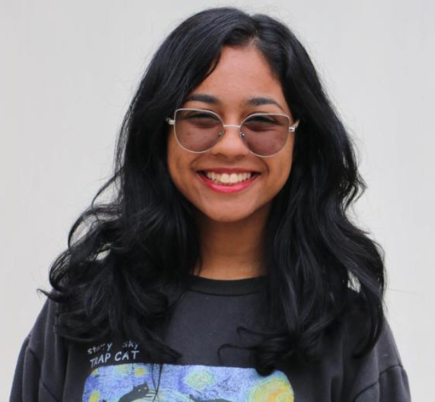
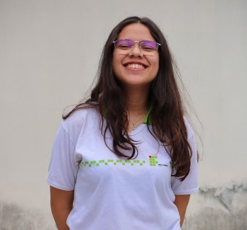
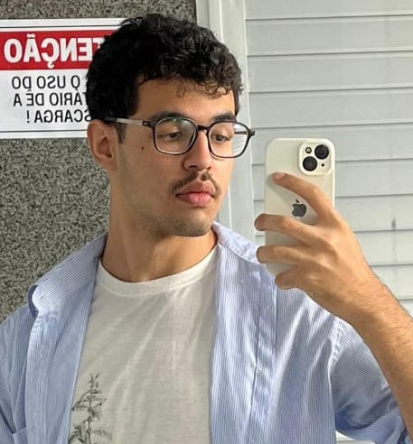
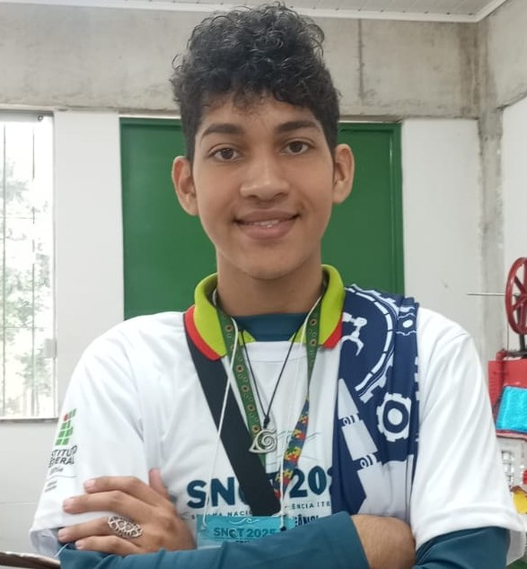
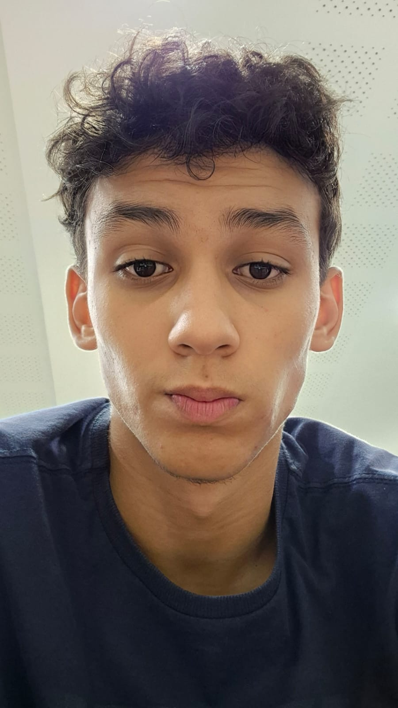
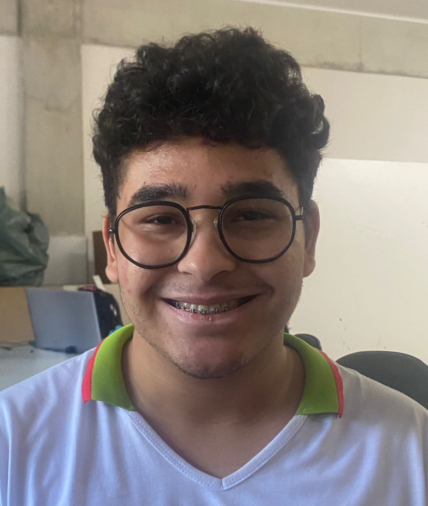
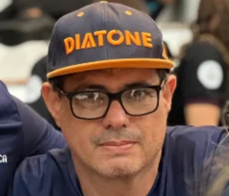

Nossa Equipe

Júlia Assis
Programadora Principal, Hard Montagem e Artística
Maria Eduarda
Programadora Secundária e Hard Montagem
Carlos Meira
Engenharia Geral, Montagem e Artística
Genelvan Brito
Técnico Geral
Lorenzo
Hardware e Pesquisa
Álvaro
Programação e Pesquisa
Guilherme
Montagem e Pesquisa